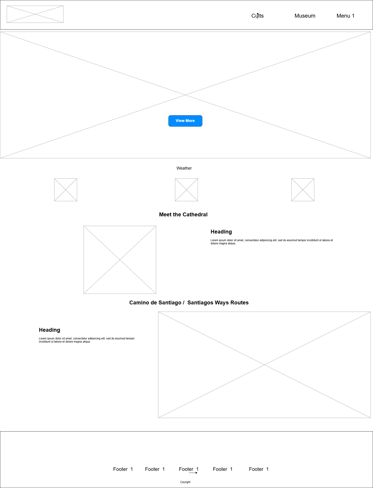
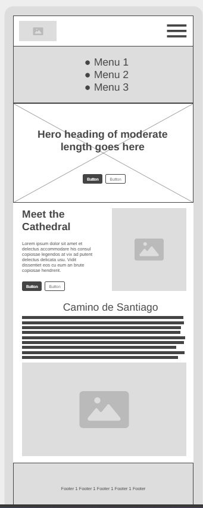

Site Plan
León Cathedral Site
The purpose of the site is to provide pilgrims and visitors and short information of the Church, including pictures of the museum, the weather and the Santiago Ways
Scenarios
- When are the mass?
- What is the price of the museum?
- Pictures of the Museum
- Map with the Santiago Ways
Color Schemas
Typography
Wireframe

